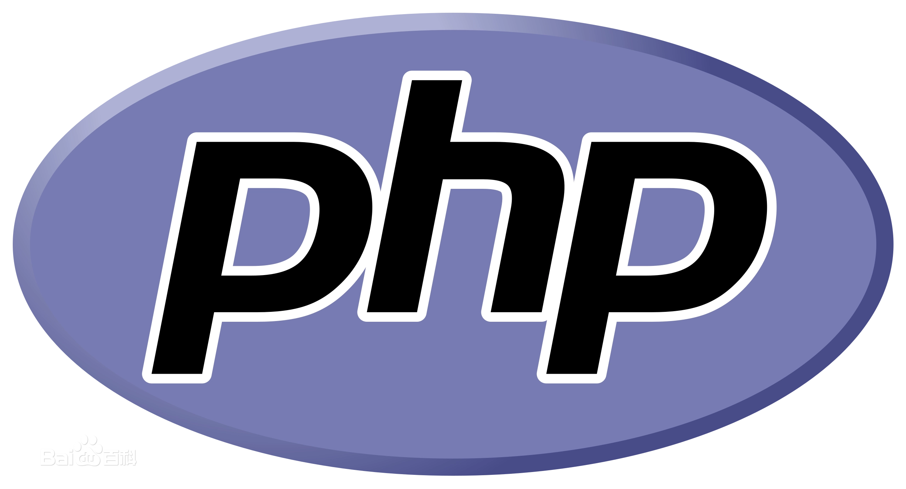

PHP

PHP（PHP: Hypertext Preprocessor）即“超文本预处理器”， 是在服务器端执行的脚本语言，尤其适用于Web开发并可嵌入HTML中。 PHP语法学习了C语言，吸纳Java和Perl多个语言的特色发展出自己的特色语法， 并根据它们的长项持续改进提升自己，例如java的面向对象编程， 该语言当初创建的主要目标是让开发人员快速编写出优质的web网站。 PHP同时支持面向对象和面向过程的开发，使用上非常灵活。
发展历程
PHP是一个拥有众多开发者的开源软件项目，最开始是Personal Home Page的缩写， 已经正式更名为 "PHP: Hypertext Preprocessor"。 PHP是在1994年由Rasmus Lerdorf创建的，最初只是一个简单的用Perl语言编写的 统计他自己网站访问者数量的程序。后来重新用C语言编写，同时可以访问数据库， 1995年，PHP（Personal Home Page Tools）对外发表第一个版本PHP1。 此后，越来越多的网站开始使用PHP，并且强烈要求增加一些特性， 如循环语句和数组变量等，1995年发布的PHP2加入了对mySQL的支持。
Andi Gutmans和Zeev Suraski在为一所大学的项目中开发电子商务程序时发现 PHP2功能明显不足，于是他们重写了代码发布了PHP3。 PHP3是类似于现代PHP语法结构的第一个版本，PHP3的最强大的功能是它的可扩展性， PHP3的新功能和广泛的第三方数据库、API的支持使得这样程序的编写成为可能。
PHP3官方发布不久，Andi Gutmans和Zeev Suraski开始重新编写PHP代码。 设计目标是增强复杂程序运行时的性能和PHP自身代码的模块性。 经过不懈努力Zend引擎研发成功并且实现了设计目标，并在1999年中期引入 PHP。 基于该引擎并结合了更多新功能的 PHP4于2000年5月正式发布。 除了更高的性能以外，PHP4还包含一些关键功能，比如： 支持更多的 web 服务器、HTTP Sessions 支持、输出缓冲、更安全的用户输入和一些新的语言结构。
PHP5于2004年7月正式发布，它的核心是Zend引擎2代（PHP7是Zend加强版3代）， 引入了新的对象模型和大量新功能，开始支持面向对象编程。 随着PHP6经历长时间的开发流产后，PHP5发布了6个版本顽强的支撑着开源社区的发展， 直到2015-12-03那天迎来了PHP 7.0的发布，其实PHP5.6已经包含了很多PHP6想实现的特性， 它为PHP7的研发争取了宝贵的时间。不负众望PHP7.0对比PHP5.6性能整整提升了2倍， PHP7的成功发布让很多核心开发成员回归到PHP社区，并且在2020-11-26发布了PHP8。 和PHP7系列相对比，PHP8对各种变量判断和运算采用更严格的验证判断模式，这点有利后续版本对jit的性能优化。
语言特点
PHP语言作为一种高级语言，其特点是开源， 在设计体系上属于C语言体系， 它可以让很多接受过高等教育的初学者能很快接受并完成入门学习， 简单好上手容易找工作自然粉丝多。如果数据量大及访问压力大，可以集成 redis、mysql分表分区分库、elasticsearch搜索引擎、消息队列写保护和php系统分布式集群部署等技术方案， 缓解数据存储、服务访问和数据检索带来的巨大压力。
经过二十多年的发展，随着php-cli相关组件的快速发展和完善， PHP已经可以应用在TCP/UDP服务、高性能Web、WebSocket服务、物联网、 实时通讯、游戏、微服务等非 Web 领域的系统研发。